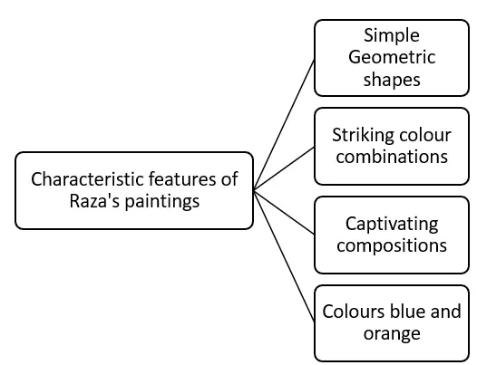
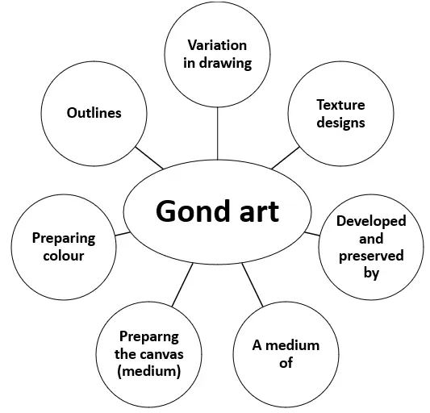

2. A medium of: It is a medium of expressing, recording and preserving what is seen. people used to draw pictures on earthen walls of their homes itself.1. Developed and Preserved by: The Gond tribal people residing largely in Madhya Pradesh, Maharashtra, Telangana, Andhra Pradesh and Odisha in India .< br> 2. A medium of: It is a medium of expressing, recording and preserving what is seen. people used to draw pictures on earthen walls of their homes itself.
3. Preparing colours: In the days of the past several things in nature such as soil of different shades, the juice of plants, leaves, tree bark, flowers, fruits and even things like coal and cow-dung were used to prepare colours.
4. Outlines: In the Gond style of art, the designs may vary a little from artist to artist but the designs that fill it make the whole picture look lively and attractive.
5. Variation in drawing: The colours, textures and patterns used in drawing vary from painting to painting.
6. Texture designs: By using dots, straight lines, dotted lines, curvy shapes and circles simple texture designs are made.
Word |
English Meaning |
Hindi Meaning |
Renowned |
Famous or well-known |
प्रसिद्ध |
Captivating |
Attracting and holding interest |
आकर्षक |
Characteristic |
A typical feature or quality |
विशेषता |
Abstract |
Art that does not attempt to represent external reality अमूर्त |
अमूर्त |
Originate |
To have a specified beginning |
उत्पन्न होना |
Composition |
The arrangement of elements in a work of art |
रचना |
Radiate |
To emit or send out (like light or peace) |
बिखेरना / फैलाना |
Metaphysical |
Related to things that are beyond the physical world |
आध्यात्मिक / पराभौतिक |
Legacy |
Something handed down from a predecessor |
विरासत |
Tribal |
Relating to a group of people (tribe) |
जनजातीय |
Mythology |
A collection of myths or traditional stories |
पौराणिक कथाएँ |
Inhabitants |
People who live in a specific place |
निवासी |
Earthen |
Made of baked or natural earth/clay |
मिट्टी का |
Enriching |
Improving or enhancing the quality of something |
समृद्ध करने वाला |
Texture |
The feel, appearance, or consistency of a surface |
बनावट |
Commercialization |
The process of managing something for profit |
व्यवसायीकरण |
Leisure |
Free time for enjoyment |
खाली समय / फुर्सत |